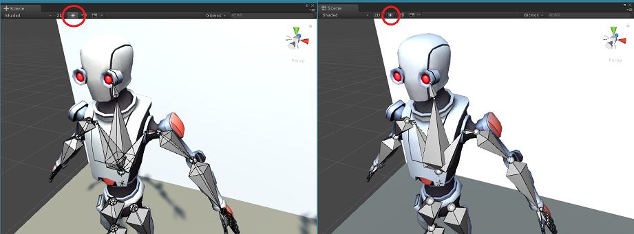

Known Issues
This page lists all known issues that can't be fixed. These issues are usually related to a specific Unity version.
Issue 01: Shortcuts in Context Menus and Menu Bar not displayed
In Unity 5.3 shortcuts aren't displayed correctly in context menus and in the menu bar of the Clip Editor. This is due to a bug in that Unity version and is fixed in newer Unity versions.
Issue 02: Related to a Unity version not supported anymore.
This known issue only occurred in an old Unity version that isn't supported anymore.
Issue 03: In the Animation Event window the tooltip of the warning icon is not working correctly.
This known issue no longer exists as the related Unity version isn't supported any more by UMotion.
Issue 04: Humanoid export produces visible differences.
This known issue no longer exists as the related Unity version isn't supported any more by UMotion.
Issue 05: Fixed since UMotion V1.02.
This known issue no longer exists as it is fixed since UMotion V1.02.
Issue 06: Fixed since UMotion V1.04p10.
This known issue no longer exists as it is fixed since UMotion V1.04p10.
Issue 07: Bones not displayed correctly in Unity 2017.3 and 2017.4.
When "allow HDR" is true on the Main Camera in the scene and Scene Lighting is enabled in the Scene View --> bones are not rendered correctly in Unity 2017.3 and 2017.4 due to a bug in that Unity versions. This bug was reported to Unity and is patched in Unity 2018.1. As a workaround, UMotion automatically disables the Scene View lighting when a GameObject is applied to the Pose Editor. It restores the original Scene View lightning state as soon as the GameObject is removed from the Pose Editor.
Issue 08: Unity's Preview window is displaying only a small part of an exported animation.
If Unity's Preview window is detached from the Inspector window it can happen that it displays only the first few frames of an animation even though the animation is exported correctly. As soon as the Inspector window get's in focus again, the Preview window is also displaying the whole animation correctly again.
Issue 09: Related to a Unity version not supported anymore.
This known issue only occurred in an old Unity version that isn't supported anymore.
Issue 10: Root motion not applied correctly in Unity Timeline.
In Unity 2017.3 and below, Unity Timeline isn't applying root motion of humanoid animation clips correctly. The root motion can be slighlty more or less than the real root motion (how it would be applied by Unity's Animator Component). This bug is fixed in Unity 2018.1 and above (see Unity Issue Tracker - Case 927718). You might notice this difference when editing an animation clip of Unity Timeline with UMotion as UMotion is previewing the animation with the correct root motion.